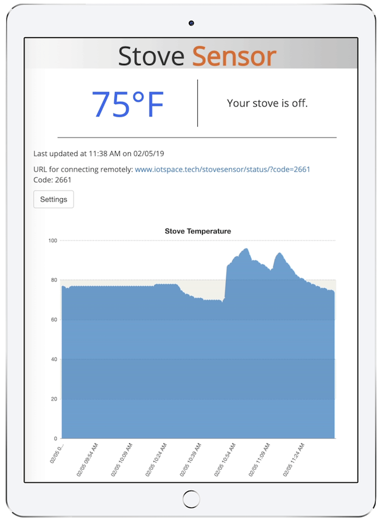

Leaving the stove on is a problem everyone homeowner faces. It's too easy to do: one second you have your dinner on the stove, then you go to the bathroom, then step out to grab groceries. Next thing you know, you're back home with the smell of burned food in every room and smoke setting of the fire alarm.
Even worse is not remembering if you turned it on or off. You could be anywhere - your yoga class, at a dinner with friends, on your first date - and suddenly the question hits you: did I turn off the stove? Deadpool fans will recall that he certainly did not remember.
The reality is that we're living in a fast-paced and always on the move age, and having to stress over silly things like leaving the stove on shouldn't be any homeowner's worry.
StoveSensor runs on a Rapsberry Pi, and uses a temperature sensor to monitor for fluctuations over time. It sits in the vent area above the stove to get readings from all of the stove heads. It constantly saves this information (but never uploads full history, for those of you concerned with privacy) and only sends the last recorded value to the database so you can view the status from anywhere.